The Native North American hall was an embarrassment to the museum. It was 70 years old and the basic, most fundamental museum principles were ignored.
Richard Lariviere, former President and CEO, The Field Museum
Keeping a major museum up to date is a significant challenge. Although updating the Native North American Hall at The Field Museum had long been on the list of exhibits needing work, it remained undone when Richard Lariviere took over as President and CEO in 2012. He considered the example of the National Museum of the American Indian, which opened in 2004 on the mall in Washington, DC, but he had issues. “It was like looking at a stamp collection with no explanation…there was no narrator or guidance for the visitor.” He felt the Field could do better. A brand new Native North American Hall became a priority.
Enter Alaka Wali. “Largely under Alaka’s vision, it was decided that we needed to bring the Native American community into the planning and execution,” he recalled. After 22 years at the Field, Wali was named curator of North American Anthropology in 2012. Her entire career had been focused on a fresh anthropological approach that engaged rather than studied indigenous communities, the traditional method in the profession.
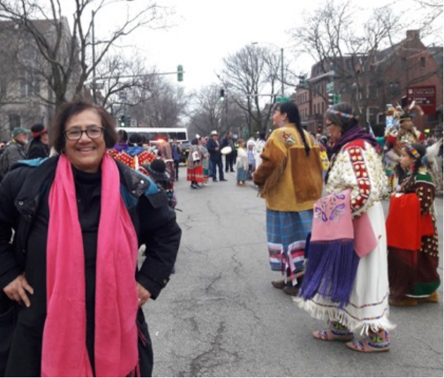
Wali’s personal experiences as an immigrant would help define her career trajectory. She was born in India, moving to the United States when her father came to University of Wisconsin, Madison to get his doctorate in physics. Her mother was an academic as well, in linguistics. As a South Asian, she never felt that she fit in. “I was always just confused about my identity,” she said. “So, when I got to college, it felt like anthropology was the right subject matter to help me sort out my own personal issues around that.” She also wanted to travel, and anthropology studies included field trips abroad.
During the Vietnam war, the field of anthropology had an identity crisis. It looked at how America was complicit in colonialism and how anthropology could change that. “I’ve always been that side of the spectrum,” Wali said. Earning her BA in anthropology at Harvard and her PhD in anthropology at Columbia, Wali taught at the University of Maryland and worked with indigenous people in Panama who were protesting a hydroelectric plant and fighting to retain their land rights. Later research took her to New York and Chicago. Two books came out of her work in Panama and Harlem: Kilowatts And Crisis: Hydroelectric Power And Social Dislocation In Eastern Panama and Stress and Resilience: The Social Context of Reproduction in Central Harlem (co-author with Leith Mullings). Both involved community-partnered research.
This mix of experience was just what then Field Museum president Sandy Boyd was looking for when he hired her in 1995 as Director of the Center for Cultural Understanding and Change. One of her early exhibits, “Living Together,” which opened in 1997, featured cases of 135 shoes from different cultures, including tiny Chinese slippers and one of Michael Jordan’s seemingly giant gym shoes. Additional areas of the exhibit included a beauty salon and a living room with interactive displays showing the tremendous variety in how humans adorn themselves and live. Wali’s modus operandi of consulting with the communities involved was in full force; the museum had consulted with community leaders, academics, artists, and anthropologists to design the exhibit, what Wali terms participatory action research.
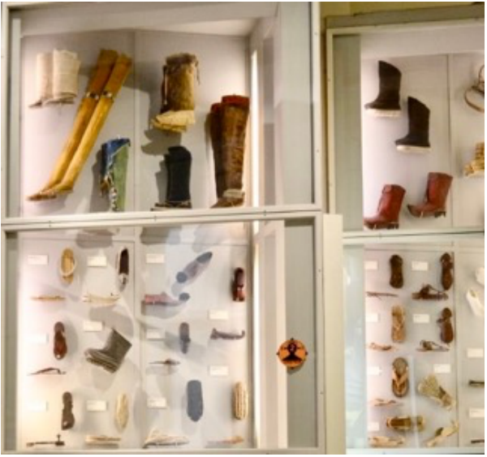
Wali had been advocating for a major renovation of the Native American Hall since 1997. “It was a little bit daunting,” she said. “There were over 750,000 items [in the Field’s collection], one of the largest collections of Native American heritage in the world.” In addition to the responsibility for preserving the artifacts, she knew the museum had to change the presentation. “[It was] racist to the core, not just inadequate…there was very little context, no explanation…In a lot of the cases, they had tacked objects to the back of the cases with nails! It was very painful.” Her predecessor had written a detailed proposal on how to change all the North American halls.
For the next few years, Wali would develop smaller projects to engage the Native American community. For the first time, the museum brought in a Native American co-curator, Apsáalooke scholar, Nina Sanders, for its Apsáalooke Women and Warriors exhibit.
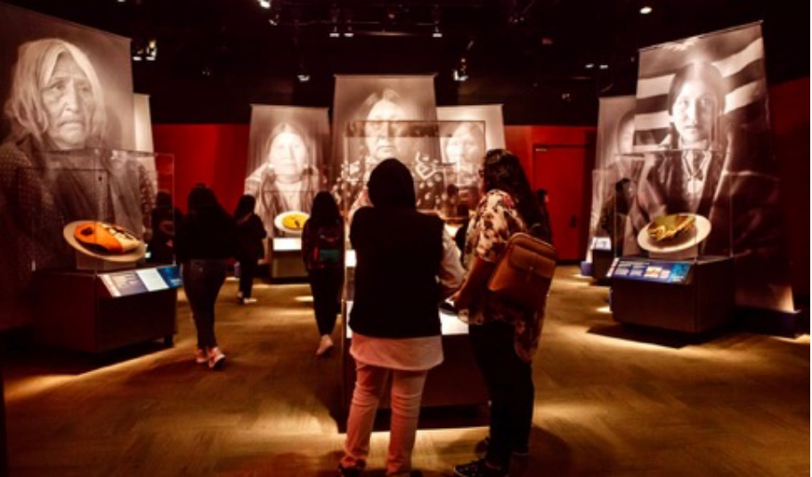
Wali also sought to deal directly with the outdated halls. She invited three Native American artists to collaborate on how Native American cultures were displayed. Kanza and Osage artist Chris Pappan creates images on historic ledgers, a nod to the ledger paper available to 19th century Indians for recording their history. For the Field, he created transparent overlays using a similar technique on the existing 70-year-old cases that corrected or covered outdated images.
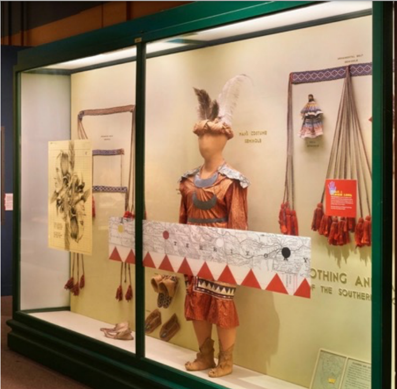
“Richard Lariviere was blown away by Chris’s work…and said, ‘that’s it,” Wali recalled. He asked the Institutional Advancement team to raise money for a renovated hall. The team was worried, but funding was found much more quickly than expected. “They underestimated the thirst for information about Native Americans. Our visitors and our donor community are keen to know about and support the telling of the Native American story,” Wali said. In 2018, the project was approved to move forward. Now the nationwide outreach could begin.
“We formed an advisory committee of about 11 people: scholars, museum pros, artists, community leaders and hired more Native American staff, including our coordinator of community engagement, Debra Yepa-Pappan, a citizen of the Jemez Pueblo, who was volunteering with us at the time,” said Wali. Lariviere noted, “Alaka’s great strength was to engage in native community…There was a good deal of doubt on their part. Museums have not been high on the Christmas card list of those communities. They wanted to be convinced of the sincerity of our wanting their inputs.”
Over the next four years, Wali and the exhibition team engaged over 130 Native Americans across the country representing 105 tribes. “Zoom was a friend during the pandemic. We were able to reach out to many more people.” This unprecedented collaboration resulted in a dramatically new approach to telling the Native American story.
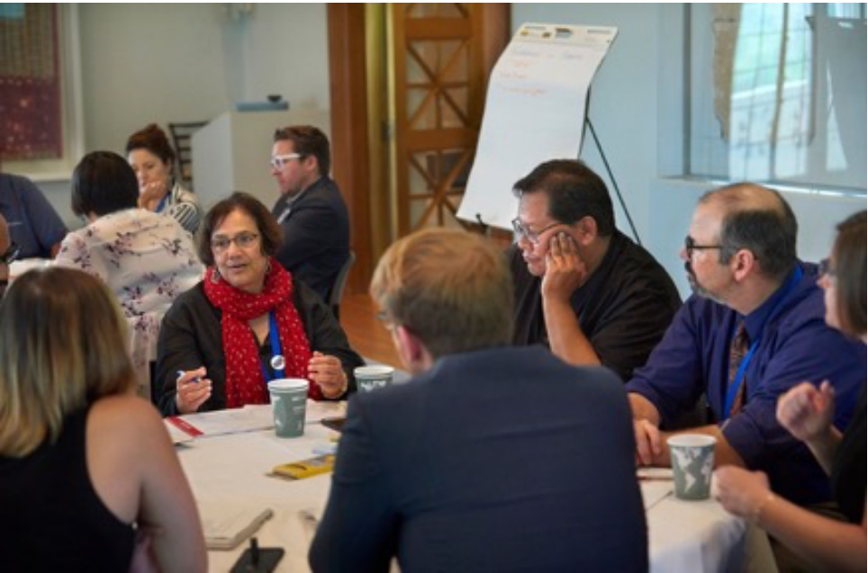
Tammy Pleshek, staff member and herself a Native American and member of the Brothertown Nation, remembered the opening, “There were tears of joy in the galleries…over 500 collaborators and their relatives came out…It exceeded their expectations.” “It’s finally alive,” said Wali. “The main thing…it’s not about the objects per se. It’s about the stories people want to tell about themselves That’s the profound change.”
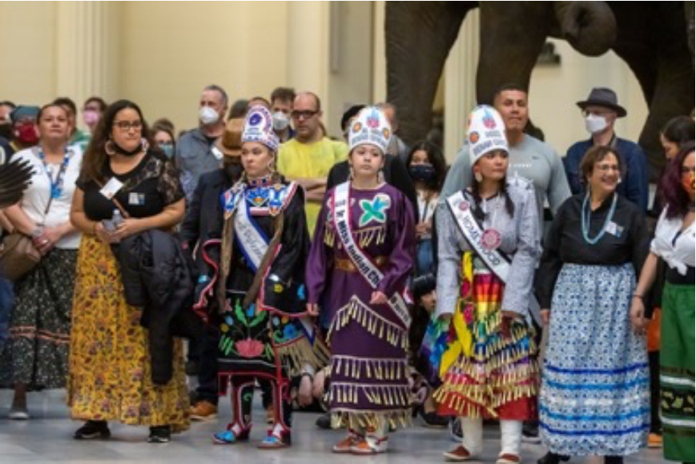
Wali about to dance with attendees at the Native Truths opening
The new exhibit couldn’t be more different from the former 70-year-old cases. The resulting exhibit, Native Truths: Our Voices, Our Stories, opened in May of this year to great acclaim. At its core, the exhibit displays five fundamental truths, expressed by Native American voices:
● Our Ancestors connect us to the past, present, and future
● Native people are everywhere
● The land shapes who we are
● We have the right to govern ourselves
● Museum collecting and exhibition practices have deeply harmed Native communities. This exhibition marks a new beginning.
In a series of five story galleries running through the center of the exhibition, different tribal stories will be highlighted on a rotating basis. “We deliberately decided a big part would be our region…they are underrepresented…we made the Chicago gallery the center of the exhibit. Urban communities are often not represented in exhibits,” Wali explained.
Native American stories past and present are offered by Native Americans themselves in audio and video formats, in photography, and through art. Visitors experience a rich mix of ancient artifacts paired with contemporary works by Native American artists. Wali tapped over 50 Native American artists to create work displayed throughout the exhibit. Collaboration even extended to the wood flooring provided by Menomonee Tribal Enterprises. The continuing contributions of Native American communities today are stressed, enhancing the Field’s historical collections.
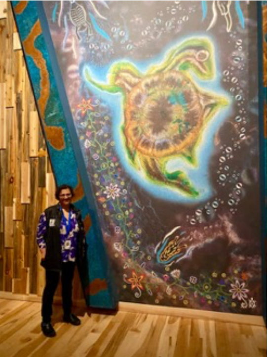 Alaka Wali with a depiction of the Native American creation story of Turtle Island, created by Potawatomi artist Monica RickertBolter, aka Monica Whitepigeon |
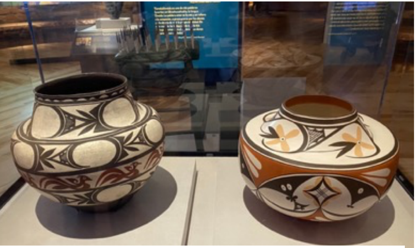 (r to l) This olla, or pot, was created by Max Early (Laguna Pueblo) |
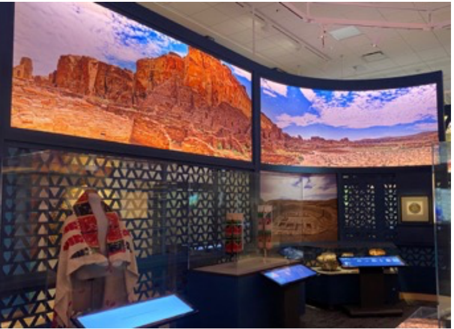 Story gallery of the Pueblo culture of Chaco Canyon Field Museum photo by Jay Young |
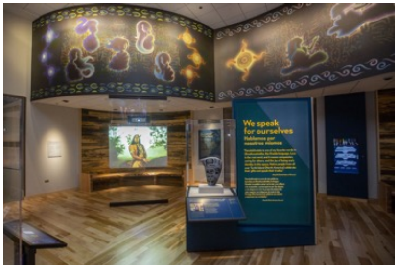 Maple flooring provided by the Wisconsin-based Menominee Tribal Enterprises Field Museum photo by Jay Young |
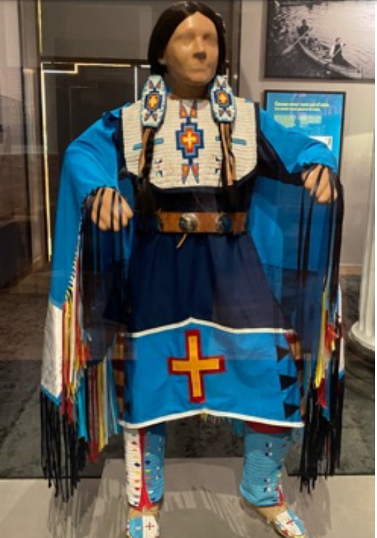 Regalia made by Chicago community member Norma Robertson (Sisseton Wahpeton Dakota) for her daughter and granddaughter to wear to powwows, dances, and other events |
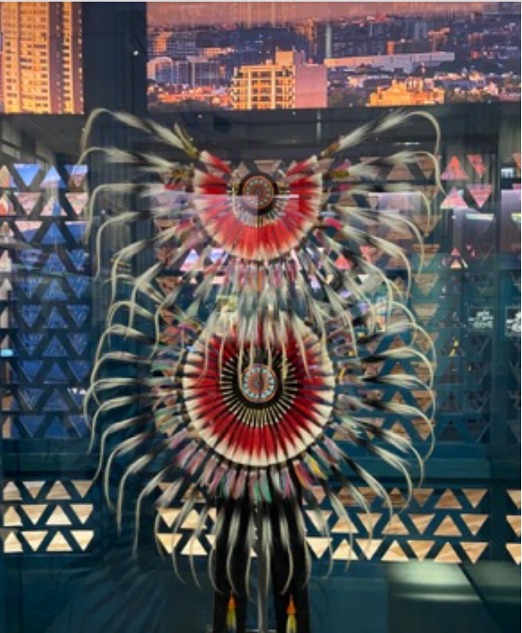 Horsehair bustle, created by Ruben Mitchell (Sac & Fox) ca. 1978, worn to dance during events like powwows Horsehair bustle, created by Ruben Mitchell (Sac & xxxxxxxxx |
The exhibit is delighting visitors. Dakota and Diné artist and comedian Dallas Goldtooth told Native News Online as he walked through the exhibit, “I’m awestruck…I’m so used to these spaces feeling so foreign, because it’s like we’re on display, Native people and cultures are on display. This very much feels like we are in charge of the narrative.”
“This is a mind-blowing experience to have so much diversity, and so much art and history and even humor…I haven’t seen an exhibit so impressive even at the National Museum of the American Indian in Washington, DC.,” observed film maker and Columbia College Associate Professor Jeff Spitz.
Native Truths: Our Voices, Our Stories is an appropriate capstone to Wali’s career. She retired this spring but remains in her office to complete the exhibition’s catalogue. She has dedicated herself to helping us understand that all peoples past and present have much to teach us and that only by engaging directly with others, can we truly benefit from their rich talent and wisdom. Lighting designer Trigg Waller who worked with Wali on many of her exhibits agrees, “Her efforts have helped educate millions of visitors about cultural diversity. I truly believe, that without her input and guidance on many Field Museum projects, the message would not have been as clearly made.”
“Our ancestors are not in our past, they are right here communicating with us,” said Wali. “The concept of time is really different; Oh, I can think about time very differently. That makes you understand the world differently.” A visit to Native Truths: Our Voices, Our Stories will help us all improve our own understanding of our world and adopt a more fluid sense of time.